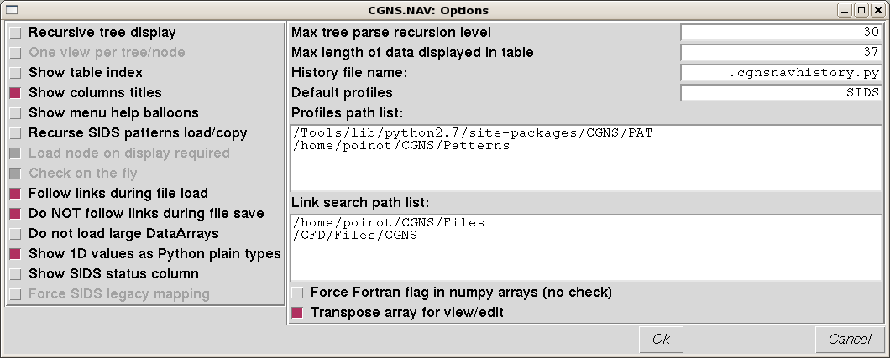

Option View¶
The Option view is the place where you set your own parameters for CGNS.NAV. You should be sure the right options are set because some of these are very important and could change the actual contents of a file you want to store.
{kind=link}
You can change values in the Option view or edit the .cgnsnavoptions.py
file you can find in your home directory. For example you can customize the
key bindings only in the .cgnsnavoptions.py file. This file is a plain
Python file, it is imported and re-generated each time you run
CGNS.NAV.
The .CGNS.NAV/historyfile.py contains the history of directories where you
opened a CGNS file.
Options¶
The check-box options are active when the box is checked. Some are only related to the display of the data, some other are driving the way CGNS.NAV reads or writes the data on disk and have a strong impact on the actual CGNS file you will obtain.
- Recursive tree display forces the Tree view to open all the children
recursively. We strongly suggest you un-check this box on large files.
One view per tree/node (Not available) when active you cannot open more than one view per tree/node.
Show columns titles is used to show/hide the top titles of tables
Show menu help balloons activates ugly yelllow balloons giving a hint on the purpose of the icons in the views menus.
Recurse SIDS patterns load/copy indicates that you want to load or copy the SIDS CGNS sub-trees in a recursive way. For example, if you load the CGNSBase_t pattern you will obtain the whole SIDS pattern, all pattern children of CGNSBase_t will be loaded as well.
Load node on display required (Not available) to save memory and time, CGNS node is read from the file only when CGNS.NAV needs to display it.
Check on the fly (Not available) forces a check each time you modify a tree.
Follow links during file load indicates that the links CGNS.NAV encounters into a CGNS file have to be followed or not.
Do NOT follow links during file save means that the links will be ignored during save which has the effect to merge all the tree nodes into the same root file.
Do not load large DataArrays
Show 1D values as plain Python types
Show SIDS status column
Max tree parse recursion level
Max length of data displayed in table
History file name
Default profile
Profile path list
Force fortran flag in numpy arrays
Transpose array for edit/view
Default key/mouse bindings per view¶
The <C-x> notation stands for <Control-X>, that is pressing the Control key and the X letter key at the same time. The mouse actions can be a Single or a Double click on the Left, Middle or Right button.
| View | Key/Mouse | Action |
|---|---|---|
| ControlView | <Return> <Delete> |
On a view line, raises this view window On a view line, closes the window and its children windows |
| TreeView | <Backspace> <Single-L> <Return> <Single-R> <C-c> <C-x> <C-v> <C-y> <C-w> <C-t> <C-a> <C-s> <C-e> <C-b> <C-u> <C-d> <C-l> <C-z> |
Raises the ControlView window Select current node On a node, open/close the selected node Opens the pop-up menu for selected node Copy selected node Cut selected node Paste buffered tree as selected node’s brother Paste buffered tree as selected node’s child Opens a new Tree window for selected node Opens a new Table window for selected node Change selected node’s name Change selected node’s CGNS type Change selected node’s value Add brother node to selected node Add child node to selected node Copy selected node as link destination Add link to buffered link node destination Check selected node and its sub-tree |
| TableView | <Backspace> | Raises the ControlView window |